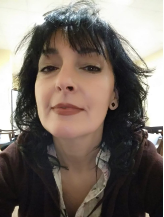
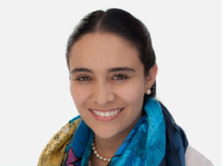

<div class="container">
    <div class="row">
            <div>
                <br>
                <h1 class="display-4 text-center"> <b>Nuestro Equipo</b></h1></div>
            
        
        <div class="text-center m-auto col-xl-6 col-lg-6 col-md-6 col-sm-12 col-12">
            <br>
            <br><br>
            <p class="text-muted fst-italic">María José González Sobejano . <br> LICENCIADA en Filosofía y Ciencias de la Educación, sección PSICOLOGÍA. <br> Facultad de Psicología y Ciencias de la Educación de la Universidad de Oviedo.</p>
        </div>
        
        <div class="m-auto col-xl-6 col-lg-6 col-md-6 col-sm-12 col-12">
            <h1 class="display-6 text-center"> <b>Experiencia Laboral</b></h1>
            <br>
            
            <h3 class="display-7">Formación Academica:</h3>
            
            <li class="lead">Psicologia. <br>
                Master de Formación en Psicología Clínica (Modificación de Conducta). <br> Master UNIVERSITARIO en Intervención Psicosocial en la Vejez (Psicogerontología).</li>
             <br>
            
            
            <h3 class="display-7">Objetivos Profesionales:</h3>
            <li class="lead">Realización de labores de evaluación y aplicación de terapias en el ámbito de la Psicología Clínica y General, y en colaboración con la Psiquiatría y la Neurología.</li>
            <br>
        </div>
        <hr>
        <div class="col-xl-6 col-lg-6 col-md-6 col-sm-12 col-12">
            <br>
            <h3 class="display-7">Formación Academica:</h3>
            <ul>
            <li class="lead">Psicologia. <br>
            Diplomado en Intervención de la Psicología Social en poblaciones vulnerables. <br> Maestría en Psicología Clínica y de la Salud. <br> Máster en Prevención de Riesgos Psicológicos. </li>
            </ul>
            <h3 class="display-7">Objetivos Profesionales:</h3>
            <li class="lead">Atención clinica adolescentes, adultos y terapia de pareja, pacientes con dificultades cde estado de ánimo y ansiedad, experticia en pacientes con problemas de adicciones y talleres, campamentos y acompañamiento emocional a las Fuerzas Armadas y sus familias.</li> <br>
        </div>
        <div class="text-center m-auto col-xl-6 col-lg-6 col-md-6 col-sm-12 col-12">
             <br><br>
            <p class="text-muted fst-italic">
                Mariángela Niño Benrey <br>
                Psicóloga con enfoque cognitivo conductual con experencia en el área Clinica y de Salud. <br>
                Expositora en III Encuentro de Ética Militar.
            </p>
        </div>
    </div>
</div>
